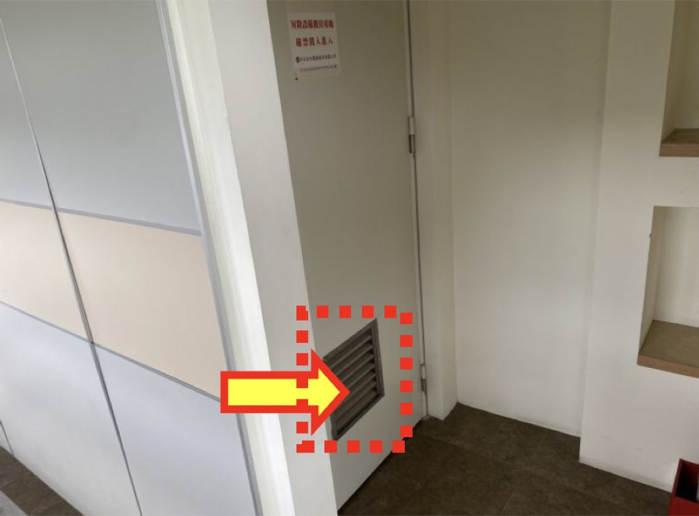
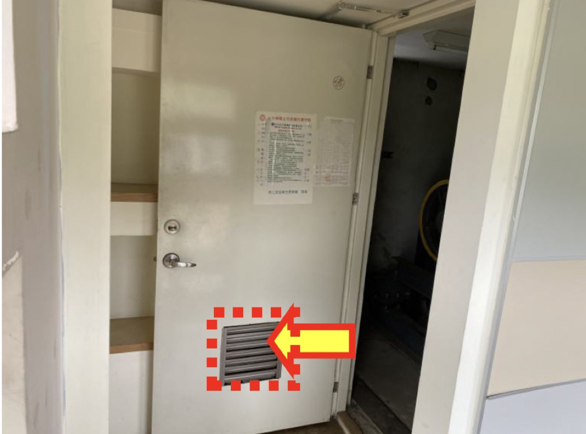
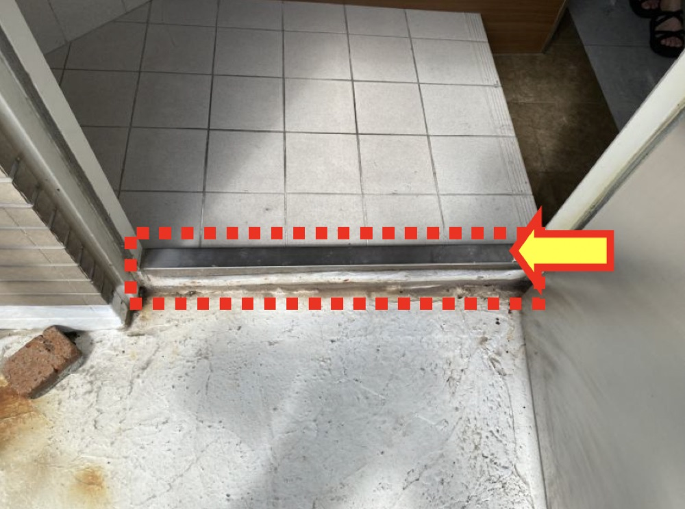
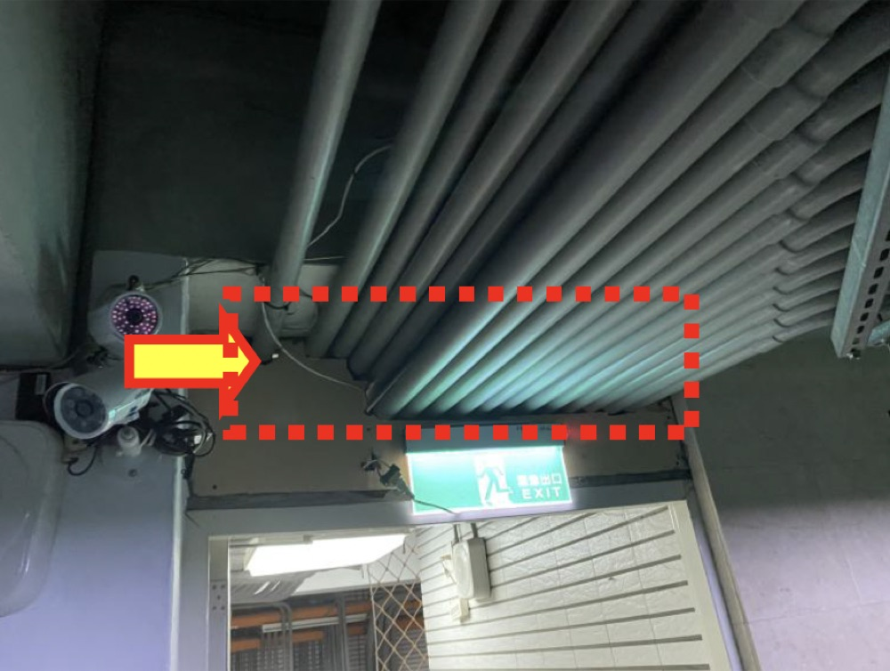
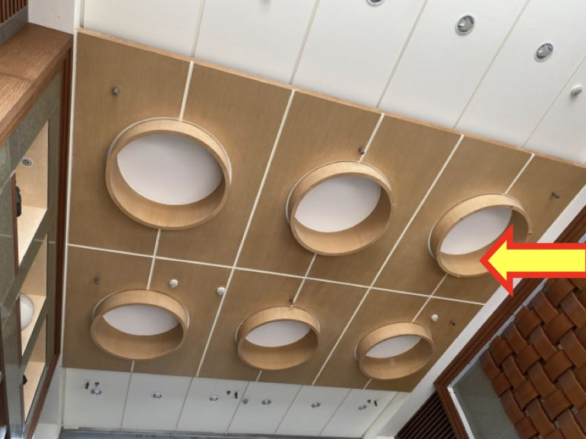
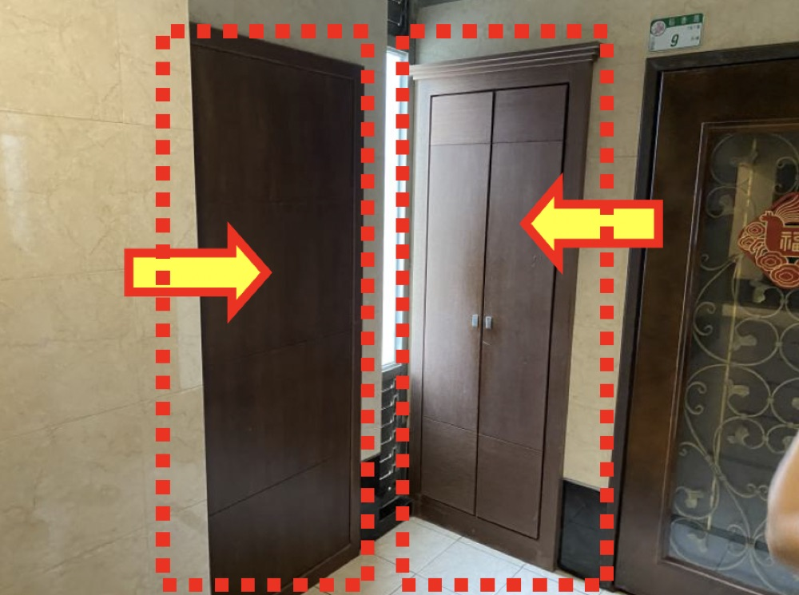
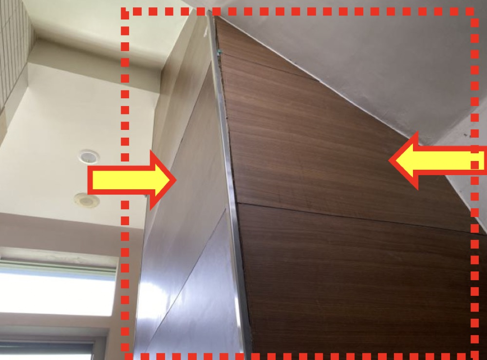
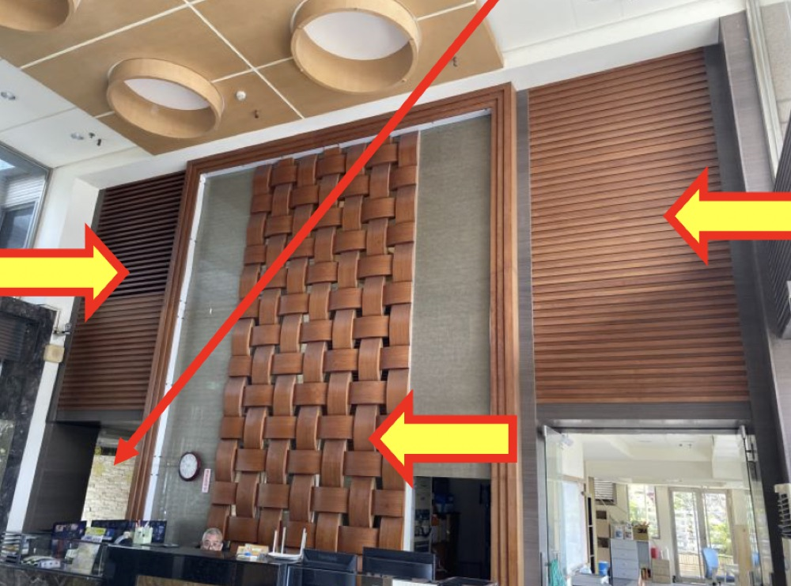
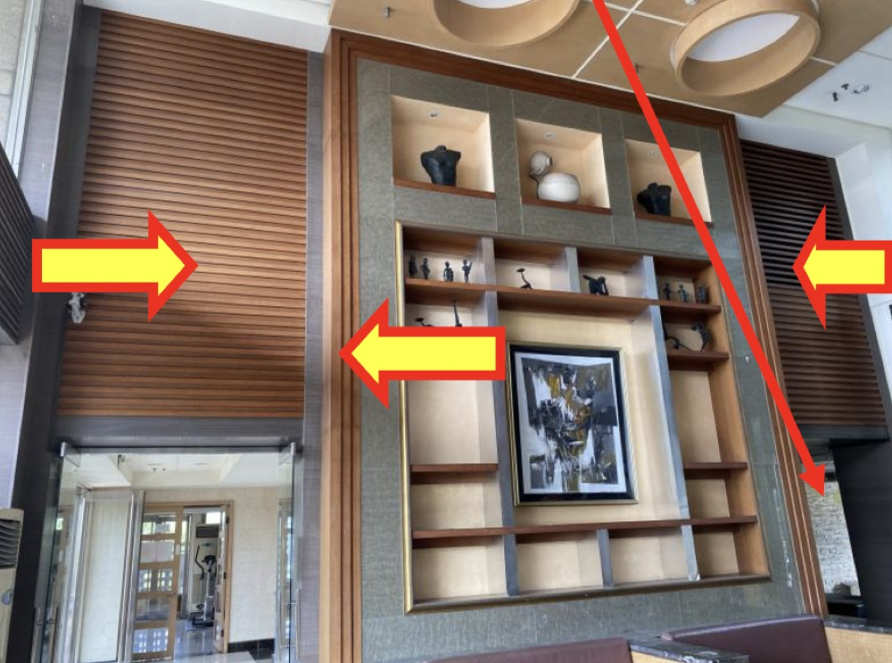

R2樓電梯機房安全梯進出口非防火門
缺失說明：7號及9號R2樓電梯機房安全梯進出口非防火門，不符合安全梯出入口防火時效、阻熱及遮煙性能規定。
改善：依規定或原核准圖復原，防火門扇雙面補鐵板。
處理進度：已聯繫廠商處理。
已完成
目前階段
下一步


缺失說明：7號及9號R2樓電梯機房安全梯進出口非防火門，不符合安全梯出入口防火時效、阻熱及遮煙性能規定。
改善：依規定或原核准圖復原，防火門扇雙面補鐵板。
處理進度：已聯繫廠商處理。

缺失說明：安全梯進出口設置門檻，可能阻礙避難逃生。
改善：門檻加貼反光條警示或順平處理。
處理進度：已採購反光條。

缺失說明：9號棟地下1樓安全梯防火門上方有管線貫穿孔洞，未達防火區劃要求。
改善：孔洞以具一小時以上防火時效之防火泥填滿。
處理進度：已聯繫廠商處理。

缺失說明：安全梯間天花板裝修材料未達耐燃一級規定。
改善：天花板以耐燃一級材料裝修，面貼矽酸鈣板。同編號27及28改善方式。
處理進度：已聯繫廠商，報價作業中。

缺失說明：安全梯間牆面裝修材料未達耐燃一級規定。
改善：牆面以耐燃一級材料裝修，面貼矽酸鈣板。
處理進度：已聯繫廠商，報價作業中。

缺失說明：安全梯中間假柱裝修材料未達耐燃一級規定。
改善：牆面以耐燃一級材料裝修，面貼矽酸鈣板。
處理進度：已聯繫廠商，報價作業中。


缺失說明：1樓門廳安全梯間牆面裝修材料未達耐燃一級規定。
改善：可於安全梯口施作防火門區劃分隔。
處理進度：已聯繫廠商，報價作業中。
本次公安檢查重點項目，請詳細閱讀。
依建築技術規則設計施工篇第33條，本社區部分靠近樓梯平台之住戶，外門於向外開啟時，可能影響避難逃生空間之暢通，因此依規定提出改善建議。
若主管機關後續要求改善、限期改善或依法裁處，相關責任及罰鍰費用由住戶自行負擔。
備註：為配合社區作業，敬請住戶在7月10日前填寫表單；如後續才要求協助拆除，費用為1,500元，由住戶自行負擔，謝謝。
請需改善之住戶，於收到通知後線上填寫回覆您的意願方案，以利管委會統計並安排後續工程作業。
表單包含以下欄位：